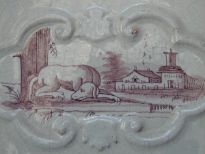

Détail d'un des carreaux de faïence qui habillent le seul poêle restant sur les 4 que le Maréchal de Saxe ( propriétaire du chateau à partir de 1745) avait fait installer dans les vastes espaces reliant l'escalier central aux appartements. Ils ont disparu à la Révolution ainsi que le reste du mobilier. Un seul a été récupéré et installé à la place qu'il occupait autrefois.
Il y a 365 cheminées pour chauffer ce piège à courant d'air... et décorer les terrasses.